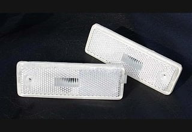
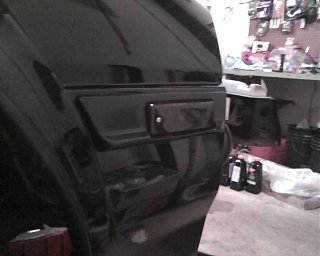
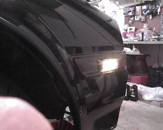
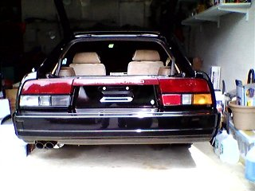

-
Just wanted to bring to everyones attention that klearz is in the process of gathering interest in reproduction side rear markers for the 84-86 model z31 (the red brake markers).
http://klearz.com/products/nissan/300zx_side_markers
The back housing that the bulb screws into is included which is awesome cause they always break. I'm sure they will also offer the lenses in OEM red or smoked as well since they do for all their products.The housing would be included
Thanks
Tina
Klearz.com
I asked about producing the front amber markers as well (they are slightly longer) and was told they may be produced in the future but they cannot say for right now. I had offered to send a couple markers to help in production.
The more people who submit their email and are truly interested the sooner these may be produced.
 -
I recently purchased a full set of lenses from Klearz and the results came out great (IMHO). (My car is black, so the effect is enhanced even more.) I purchased fully smoked front parking/turn lenses, fully smoked front/rear side lenses and a full set of lightly smoked rear lenses. Now, before you think that this somehow makes my car unsafe at night, let me just say that I have installed very bright LED bulbs behind these lenses. The fronts have switchback white/ambers, the sides have bright amber in the fronts and bright red in the rear, and the tail lights … well, I'll get to that in a bit. All of these lights are easily visible in broad daylight from any and all angles. At night, they are easily seen against anything else on the road. The lenses in the rear help clean up what I considered to be too busy looking with clear, red and amber colored lenses --- going all clear on the bottom gives the car a more up-to-date appearance. The attached photo can allow you to see how the car looks either way by covering up one half of the tail with your hand or piece of paper. (It's all clear now.) And the front side view gives you an idea of just how bright the lens appears … exposure is almost identical to the non-lit view.
And then there is a bonus that the clear rear lenses offer. One can replace the right and left 1156 turn signal bulbs (along with their sockets) to 1157 white/amber switchbacks (now with 1157 sockets). By wiring them such that the white switchback contact connects to the positive back-up bulb wire, you now get 4 very bright back-up lights instead of just 2. Don't worry, if you connect the switchback amber signal to the positive signal wire that was originally used for the 1156 bulb, they will still work as ordinary amber turn signal bulbs --- even when in reverse.  Last edited by NewJerseyZ; 11-20-2016, 10:31 AM. -
How the hell did you buy the side markers when they are not even available?Originally posted by NewJerseyZ View Post

Copyright © 2006–. All rights reserved. Privacy Policy
Comment